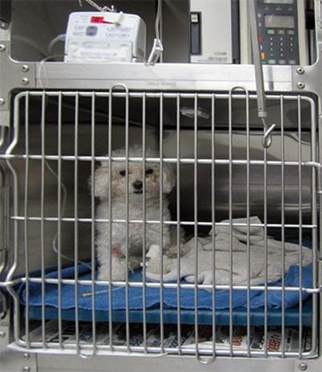

HOSPITALIZACIÓN

Servicios destinados al internamiento de pacientes para su diagnóstico, recuperación y/o tratamiento.
Muchos de nuestros pacientes deben de tener un control médico permanente por uno o varios días dependiendo de su estado clínico,
el servicio de internado de Vet Care Center garantiza la monitorización del paciente las 24 horas del día por médicos veterinarios,
los cuales realizan los cuidados y procedimientos médicos constantes para que nuestros amigos regresen a casa lo más pronto posible.